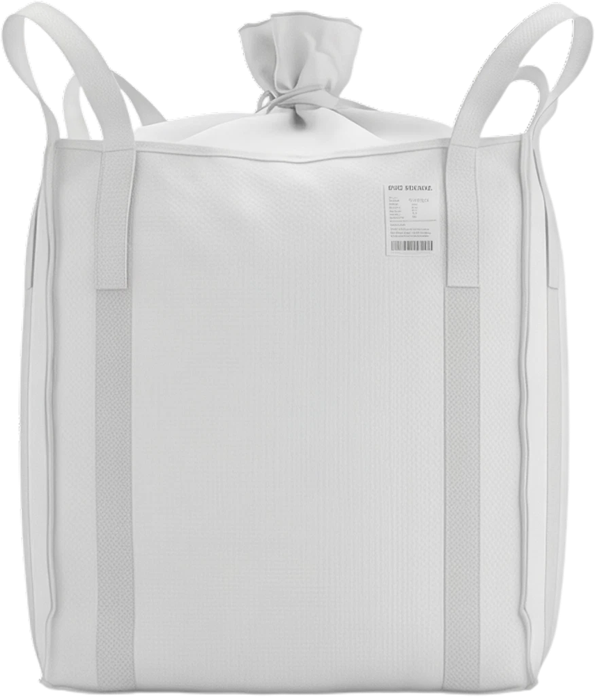
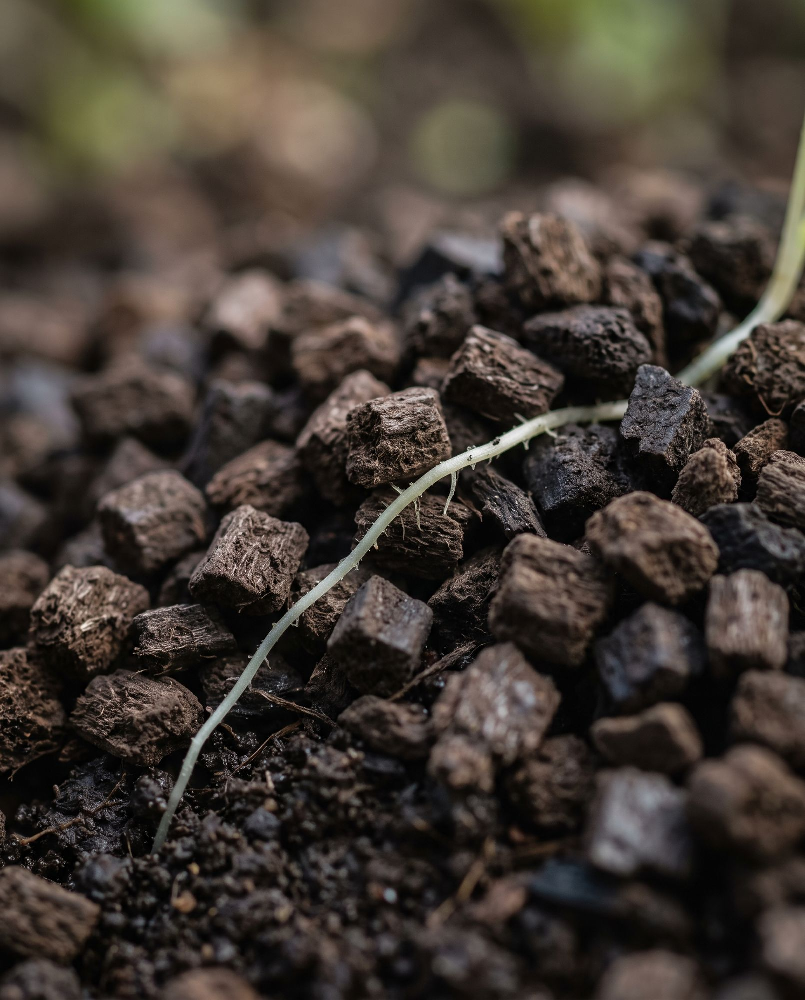
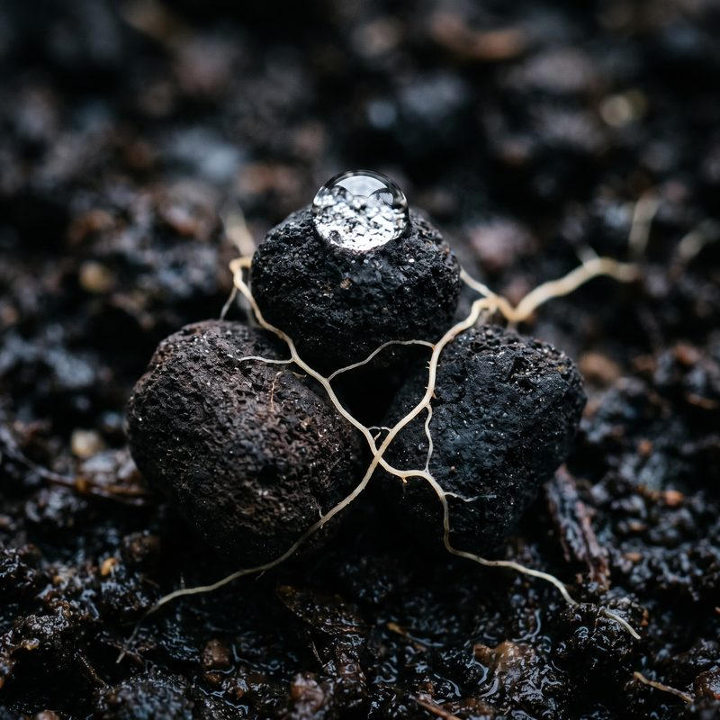
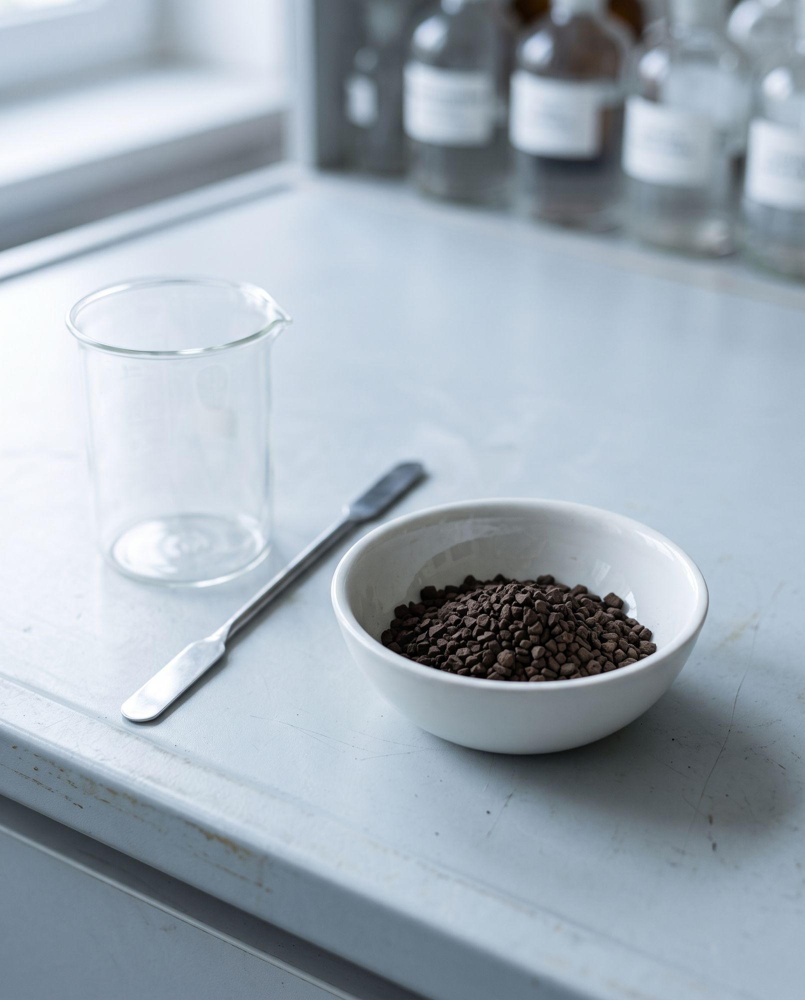

Kadr do wygenerowania: młoda borówka sadzona z CARBOMAT ECO

CARBOMAT ECO pH 4,5–5,0
cena brutto za opakowanie
39,81 zł netto
CARBOMAT ECO to frakcjonowany i odsiewany lignit bez żadnej obróbki chemicznej – materia organiczna zatrzymana na etapie stabilnego humusu. Odmiana 4,5–5,0 pH powstała dla roślin kwasolubnych.
Połącz z
Produkty, które polecamy stosować razem z CARBOMAT ECO.
-
CARBOMAT ECO Ściółka pH 4,5–5,0
Do rozsypania warstwą 3–5 cm wokół roślin, bez mieszania.
od 43 zł
-

CARBOHUMIC niefiltrowany (20 mesh)
Producent zaleca stosowanie razem z CARBOMAT ECO – płynne kwasy humusowe podajesz podlewaniem.
od 170 zł
Parametry produktu
| Odczyn (pH) | 4,5–5,0 |
|---|---|
| Sucha masa | ~87% |
| Materia organiczna w suchej masie | ~92% |
| Węgiel organiczny | ~51% |
| Kwasy humusowe i fulwowe | do ~70% (zależnie od pokładu) |
| Azot (N) | ~0,11% |
| Potas (K₂O) | ~0,6% |
| Fosfor (P₂O₅) | ~0,5% |
| Frakcje | 0,1–2 · 2–4 · 4–8 mm |
| Postać | sypka, gruzełkowata |
| Termin przydatności | 5 lat |
| Certyfikat | ekologiczny IUNG |
| Metale ciężkie | Ołów <1,0 · kadm <1,0 · arsen <0,01 · chrom <0,5 · nikiel <0,5 · rtęć <0,05 mg/kg |
Materia organiczna i węgiel w suchej masie; badanie akredytowanego laboratorium PCBC S.A. (2022) i karta produktu.
Wysyłka i dostawa
Worki wysyłamy kurierem: 10 zł za paczkę przy przedpłacie. Big bagi jadą na palecie – jeden big bag to jedna paleta, dostawa od 300 zł ⚠️. Czas: do 7 dni roboczych od zaksięgowania wpłaty. Dostawa kurierem, przesyłką paletową albo do paczkomatu. Dokładny koszt całego zamówienia policzy koszyk.
Dokumenty do pobrania (PDF)
⚠️ Pliki PDF do podpięcia przez CarboHort; analizy odświeżane co roku.
O produkcie
CARBOMAT ECO to frakcjonowany i odsiewany lignit bez żadnej obróbki chemicznej – materia organiczna zatrzymana na etapie stabilnego humusu. Odmiana 4,5–5,0 pH powstała dla roślin kwasolubnych. Wymieszana z glebą przy zakładaniu plantacji lub sadzeniu buduje magazyn na wodę i składniki pokarmowe i sprzyja rozwojowi korzeni – pracuje latami. Istniejące nasadzenia ściółkujesz CARBOMAT ECO Ściółką.
- Odczyn
- pH 4,5–5,0
- Frakcje
- 0,1–2 · 2–4 · 4–8 mm
- Termin przydatności
- 5 latprzechowywać w chłodnym i suchym miejscu
- Certyfikat
- ekologiczny IUNG
Sprawdzi się, gdy
- borówka
- wrzosowate
- różaneczniki
- azalie
- zakładanie plantacji
Co zyskujesz
-
Odczyn pod kwasolubne
pH 4,5–5,0 – dla borówki, wrzosowatych, różaneczników i azalii. Odmiana uniwersalna ma 6,0–6,5 pH.
-
Kupujesz raz, działa latami
To nie sezonowy nawóz. Gruzełki lignitu pracują w glebie kilkanaście lat i dłużej – bazę zakładasz raz, przy sadzeniu.
-

Magazyn wody i składników
Około 60% objętości gruzełki to pory: magazynują wodę, napowietrzają podłoże i zatrzymują potas, wapń, magnez i azot amonowy.
-

Czysty, z certyfikatem
Certyfikat ekologiczny IUNG. Metale ciężkie wielokrotnie poniżej granic – badanie akredytowanego laboratorium PCBC S.A. (2022).
Jak stosować
- Przy sadzeniu borówki i innych kwasolubnych: ok. 100 ml pod każdą roślinę, wsypane w dołek – worek 20 l to podkład pod ok. 200 sadzonek.
- Wymieszaj z glebą: 10–15% objętości gleby z warstwy ornej albo całego przygotowanego podłoża.
- Własne podłoże: CARBOMAT ECO 10–20%, torf lub kompost 30–40%, ziemia rodzima 50%.
- Rośliny już rosną? Rozsyp CARBOMAT ECO Ściółkę warstwą 3–5 cm, bez mieszania.
Dokładną dawkę i liczbę opakowań policzy konfigurator.
Najczęstsze pytania
Czy CARBOMAT ECO można przedawkować?
Praktycznie nie – to produkt nienawozowy. Najważniejszy jest właściwy odczyn – ta odmiana ma 4,5–5,0 pH.
Kiedy zobaczę efekt?
Strukturę i lepsze gospodarowanie wodą – już w pierwszym sezonie; budowę próchnicy – w horyzoncie 2–5 lat. Trwały wkład lignitu pozostaje kilkanaście do ponad 20 lat.
Przemieszać czy rozsypać?
Przy sadzeniu CARBOMAT ECO przemieszaj z glebą lub podłożem. Pod istniejące nasadzenia jest CARBOMAT ECO Ściółka (frakcja 8–20 mm), którą rozsypujesz na powierzchni warstwą 3–5 cm.
Czym Ściółka różni się od kory?
W przeciwieństwie do kory nie powoduje głodu azotowego. Do tego wzbogaca glebę w materię organiczną i substancje humusowe, obniża pH pod uprawy kwasolubne i tworzy siedlisko dla pożytecznych mikroorganizmów.
Pełny opis działania, badania i agrotechnikę znajdziesz na stronie CARBOMAT ECO.
Prowadzisz uprawę profesjonalną – sad, plantację, pole lub szkółkę?
Przy większych ilościach i stałych dostawach przygotujemy ofertę. Klienci profesjonalni zamawiają na naszej platformie – po swojej cenie.

Zobacz też
-
CARBOMAT ECO pH 6,0–6,5
od 39 zł
-

CARBOHUMIC filtrowany (187 mesh)
od 25 zł
-

CARBOHUMIC MAXI PLUS
od 119 zł
-
CARBOHUMIC OGRÓD
od 70 zł